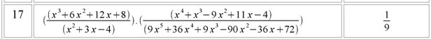
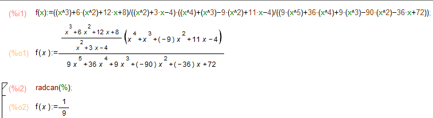
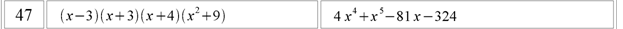
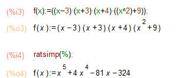
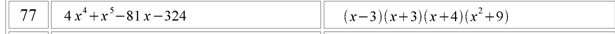
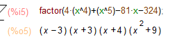
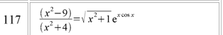
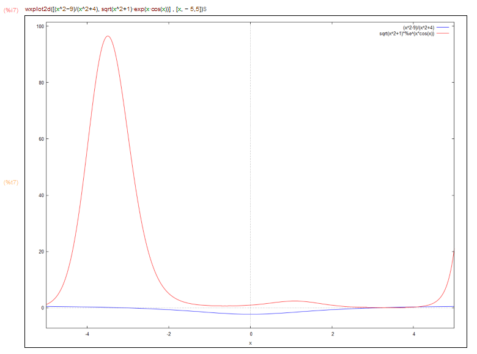
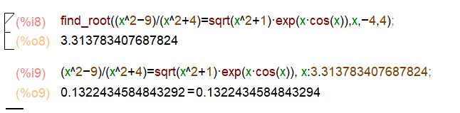

Сайт-звіт до лабораторних робіт студентки 1 курсу групи "Математика"Якимчук Катерини Сергіївни 10 варіант
Підсумковий контроль
Спрощення алгебраїчних виразів


Розкриття дужок


Розкладання алгебраїчних виразів на множники


Графічно дослідити рішення нелінійних рівнянь


